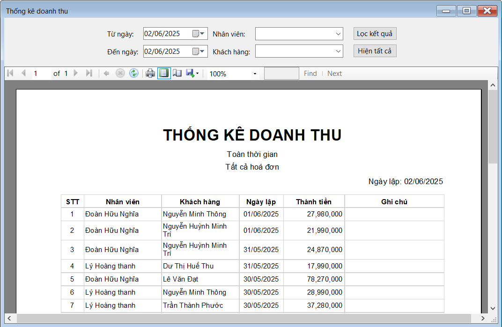

Hướng dẫn sử dụng màn hình Thống kê doanh thu.
Bước 1: Đưa con trỏ chuột vào Báo cáo - Thống kê sau đó click chuột chọn Thống kê doanh thu sẽ hiện ra Form Thống kê doanh thu.
Bước 2: Form Thống kê doanh thu gồm: Khoảng thời gian mà chúng ta muốn thống kê, Nhân viên, Khách hàng, Nút Lọc kết quả để hiển thị dữ liệu doanh thu trong khoảng thời gian đã chọn và Nút Hiện tất cả để bỏ lọc theo thời gian và xem toàn bộ doanh thu.
Bước 3: Ở bảng thống kê doanh thu gồm: STT, Nhân viên, Khách hàng, Ngày lập, Thành tiền, Ghi chú.
Bước 4: Trên thanh công cụ (gần phía trên của bảng), có thể Phóng to / thu nhỏ báo cáo, In báo cáo bằng biểu tượng máy in và Xuất báo cáo ra các định dạng khác như PDF/Excel.